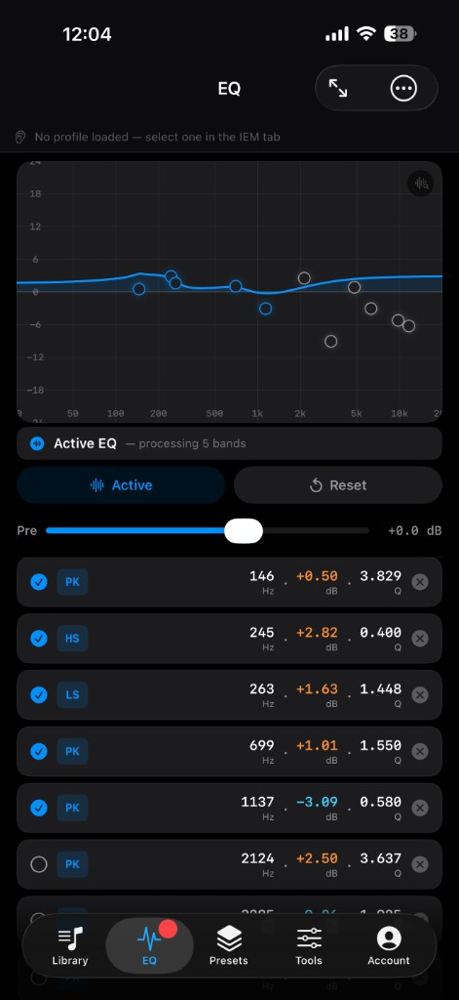
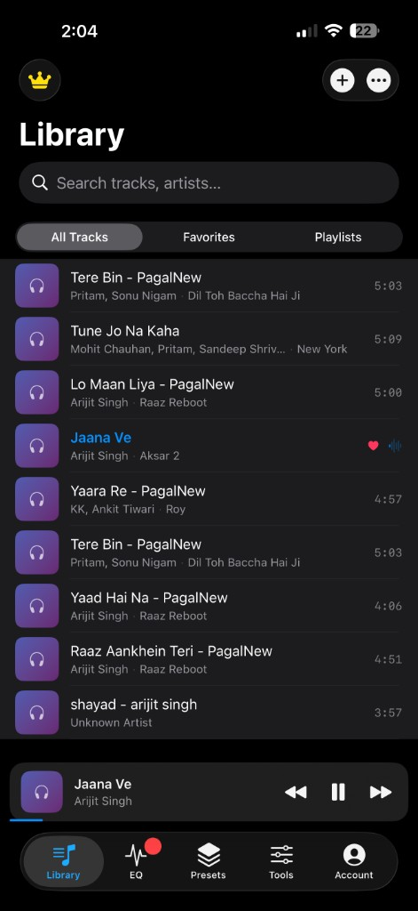
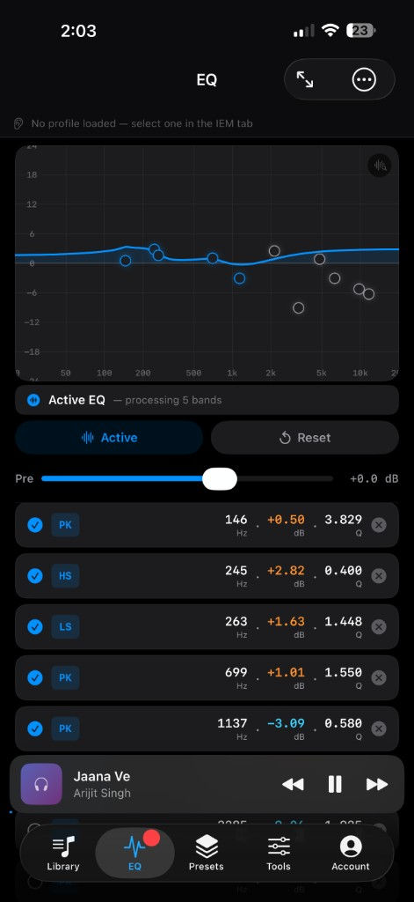
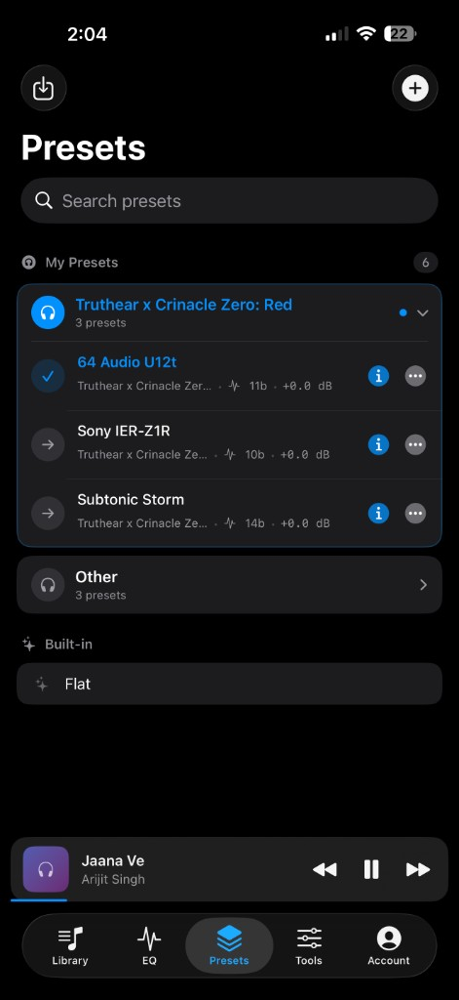
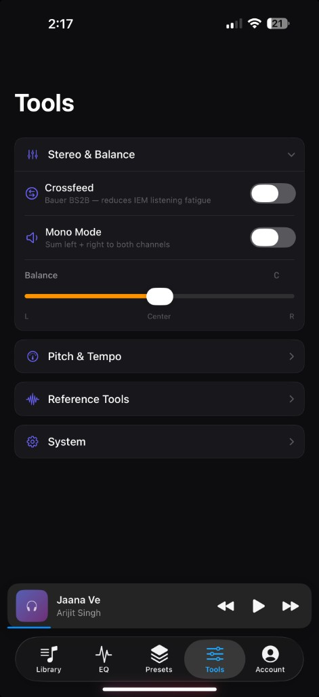

Import Existing EQ Profiles
Already use Squig.link or PEQdb? Export your compatible parametric EQ profile and import it into Pavlet EQ in seconds.
Import compatible parametric EQ profiles exported from Squig.link and PEQdb Studio into Pavlet EQ and enjoy your music with your preferred tuning, directly on your iPhone.
App Store link is a placeholder until launch.
Keep the IEM tuning you love, on your own music, with full control whenever you want it.
Already use Squig.link or PEQdb? Export your compatible parametric EQ profile and import it into Pavlet EQ in seconds.
Keep your favorite IEM tuning with your local music library. Fine-tune frequencies, gain, and Q values whenever you like.
Designed for listeners who care about accurate sound, simplicity, and a clean listening experience.
Thousands of community-created IEM measurements and tuning profiles are available online. Pavlet EQ makes it easy to bring your preferred sound along for the ride.
Pavlet EQ does not include or host these databases, and is not affiliated with, endorsed by, or sponsored by Squig.link or PEQdb Studio. Squig.link and PEQdb Studio are independent community tools used to generate compatible parametric EQ settings.

Choose your IEM on Squig.link or PEQdb Studio.
Generate your preferred EQ.
Export the compatible parametric EQ profile.
Import it into Pavlet EQ and start listening.
A clean, focused interface for your music, your tuning, and your saved profiles.




Beyond the equalizer, Pavlet EQ includes a dedicated Tools tab with the kind of controls audiophiles actually reach for.
A Bauer BS2B–style crossfeed blends a little of each channel into the other, recreating the natural way speakers reach both ears — reducing the harsh in-head separation and listening fatigue common with IEMs.
Sum the left and right channels to both sides. Perfect for checking mix balance, mono compatibility, or comfortable single-ear listening.
Shift the output smoothly between left and right with a precise center detent — ideal for compensating for hearing or fit differences.
Adjust playback pitch and tempo independently for practice, transcription, or simply slowing a track down.
Built-in test signals and noise generators to evaluate your gear, channel matching, and tuning.
Fine-tune app behavior and audio engine settings to match how you listen.
Rotate your iPhone and the equalizer expands into a wide, immersive canvas. The full-width curve gives you more room to read your response and drag each band with pinpoint precision.
Pavlet EQ is independently designed and developed by a solo developer with one goal: never settle for mediocre audio.